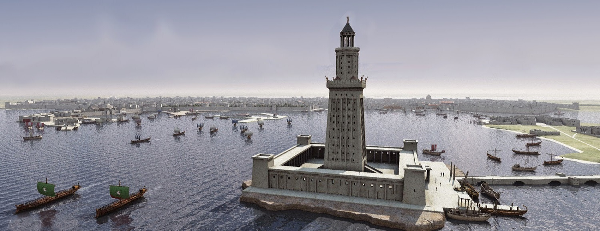

LIGHTHOUSE OF ALEXANDRIA

The Lighthouse of Alexandria, sometimes called the Pharos of Alexandria was a lighthouse built by the Ptolemaic Kingdom, during the reign Ptolemy II Philadelphus (280–247 BC)[1] which has been estimated to be 100 metres (330 ft) in overall height.[2] One of the Seven Wonders of the Ancient World, for many centuries it was one of the tallest man-made structures in the world. Badly damaged by three earthquakes between AD 956 and 1323, it then became an abandoned ruin. It was the third longest surviving ancient wonder (after the Mausoleum at Halicarnassus and the extant Great Pyramid of Giza), surviving in part until 1480, when the last of its remnant stones were used to build the Citadel of Qaitbay on the site. In 1994, French archaeologists discovered some remains of the lighthouse on the floor of Alexandria's Eastern Harbour.[3] In 2016 the Ministry of State of Antiquities in Egypt had plans to turn submerged ruins of ancient Alexandria, including those of the Pharos, into an underwater museum.
Pharos was a small island located on the western edge of the Nile Delta. In 332 BC Alexander the Great founded the city of Alexandria on an isthmus opposite Pharos. Alexandria and Pharos were later connected by a mole[5] spanning more than 1200 metres (.75 mi), which was called the Heptastadion ("seven stadia"—a stadium was a Greek unit of length measuring approximately 180 m). The east side of the mole became the Great Harbour, now an open bay; on the west side lay the port of Eunostos, with its inner basin Kibotos now vastly enlarged to form the modern harbour. Today's city development lying between the present Grand Square and the modern Ras el-Tin quarter is built on the silt which gradually widened and obliterated this mole, and the Ras el-Tin promontory represents all that is left of the island of Pharos,[6] the site of the lighthouse at its eastern point having been weathered away by the sea.
Back to